Herramientas Profesionales
 MySQL
MySQL Canva
Canva Gemini
Gemini Word
Word Excel
Excel PowerPoint
PowerPoint Packet Tracer
Packet Tracer VSCodeMySQLCanvaGeminiWordExcelPowerPointPacket TracerVSCode
VSCodeMySQLCanvaGeminiWordExcelPowerPointPacket TracerVSCodeComo Técnico Informático, me considero una persona curiosa y motivada por el aprendizaje constante. Cuento con amplia experiencia en atención al cliente. Me caracterizo por ser responsable, práctico y empático, con capacidad de adaptación al cambio, facilidad para establecer buenas relaciones interpersonales, compromiso organizacional y aptitud para el trabajo en equipo.
Montaje, diagnóstico y mantenimiento de equipos.
Windows Server, Linux Server y Máquinas Virtuales.
Edición de imágenes y vídeos, generación con IA.
Backups, RAIDs, SSH, Servidores Proxy y Radius.
Colegio La Salle "Sagrado Corazón de Jesús" | 2026
Universidad Central de Venezuela | 2010
Braga, Portugal
Asistencia en labores de soporte técnico en equipos informáticos domésticos y empresariales. Mantenimiento y configuración de equipos informáticos.
Jerez de la Frontera, España
Instalación y configuración de aplicaciones y equipos diseñados para labores de hostelería (Revo). Despliegue de redes locales. Ensamblaje y mantenimiento de ordenadores.
Jerez de la Frontera, España
Atención de llamadas telefónicas de N1 y N2 para el diagnóstico, gestión, seguimiento y resolución de incidencias técnicas para Orange España.
MySQLCanvaGeminiWordExcelPowerPointPacket TracerVSCodeMySQLCanvaGeminiWordExcelPowerPointPacket TracerVSCode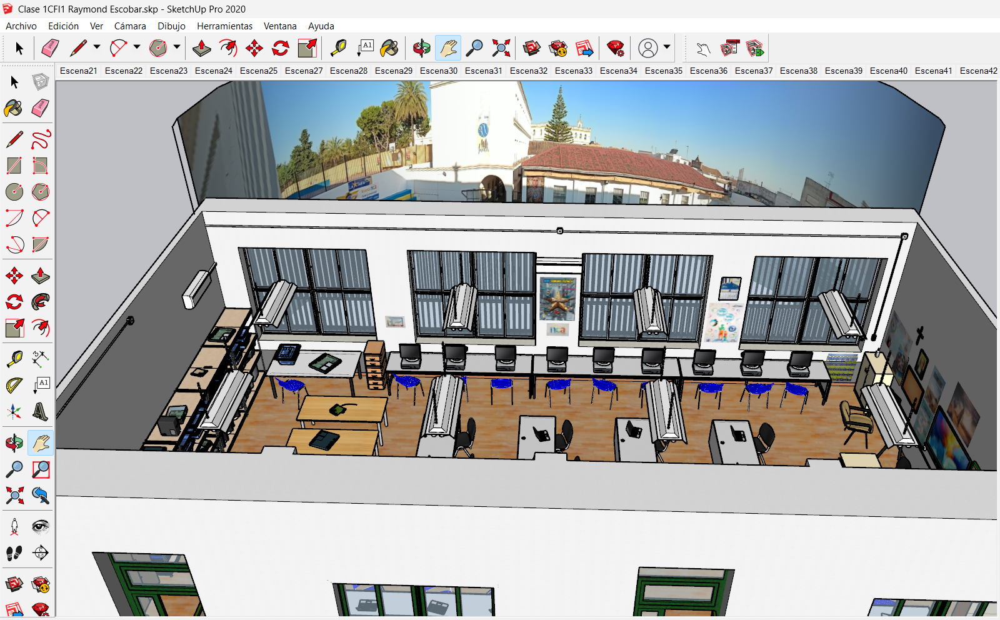
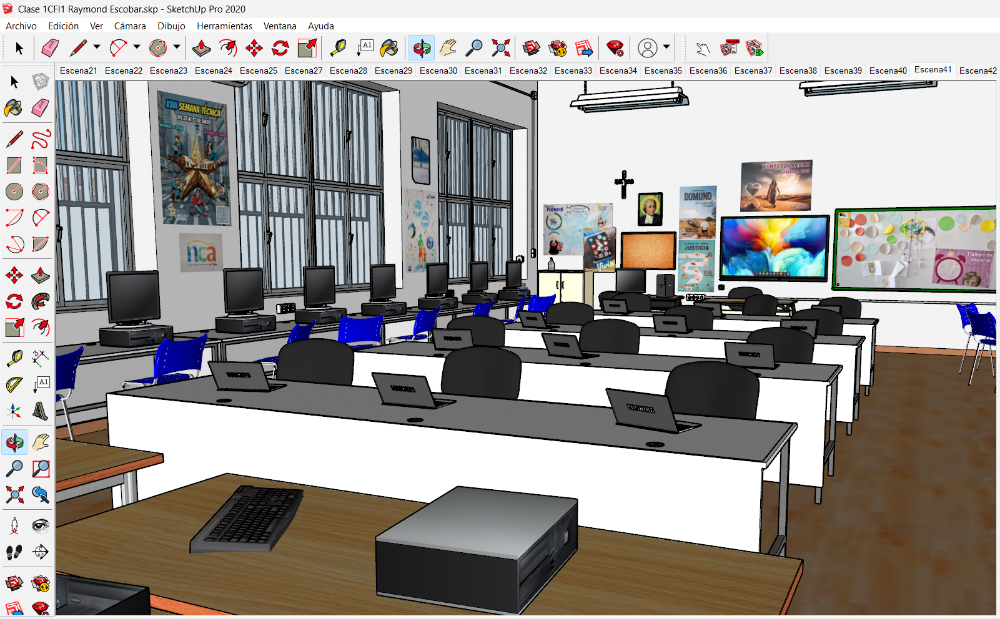
Recreación de un aula de informática con herramientas de diseño 3D.
Ver Proyecto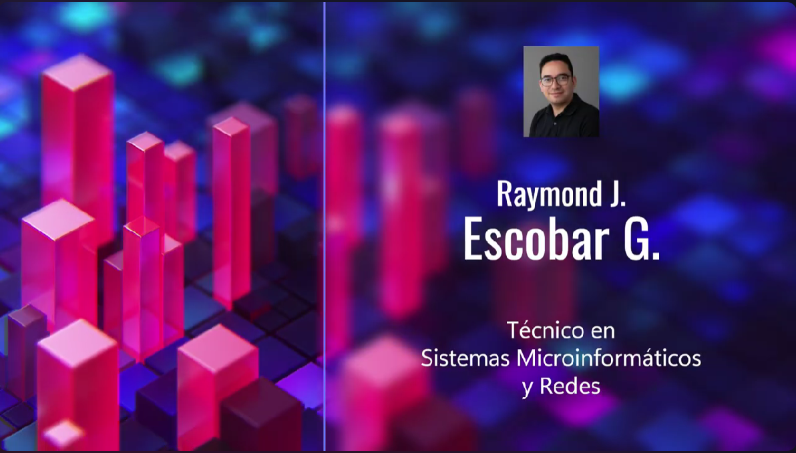
Creación de un video currículum implementando múltiples herramientas de IA y edición de vídeo.
Ver Proyecto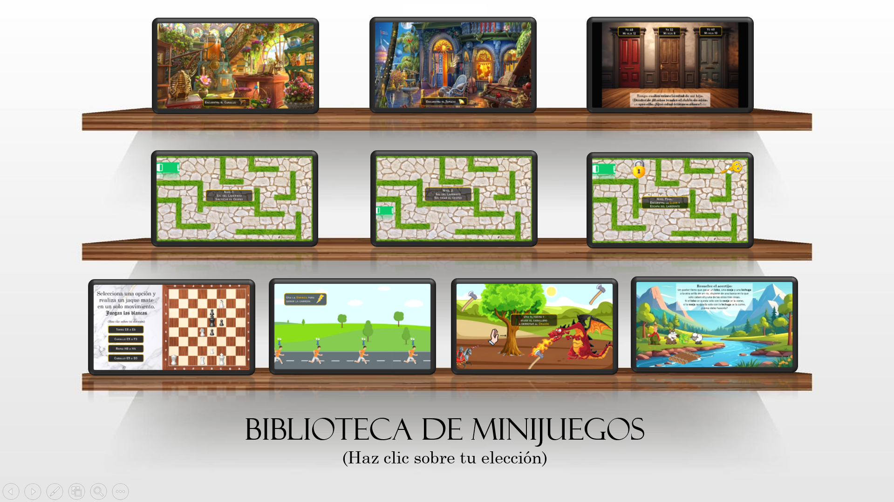
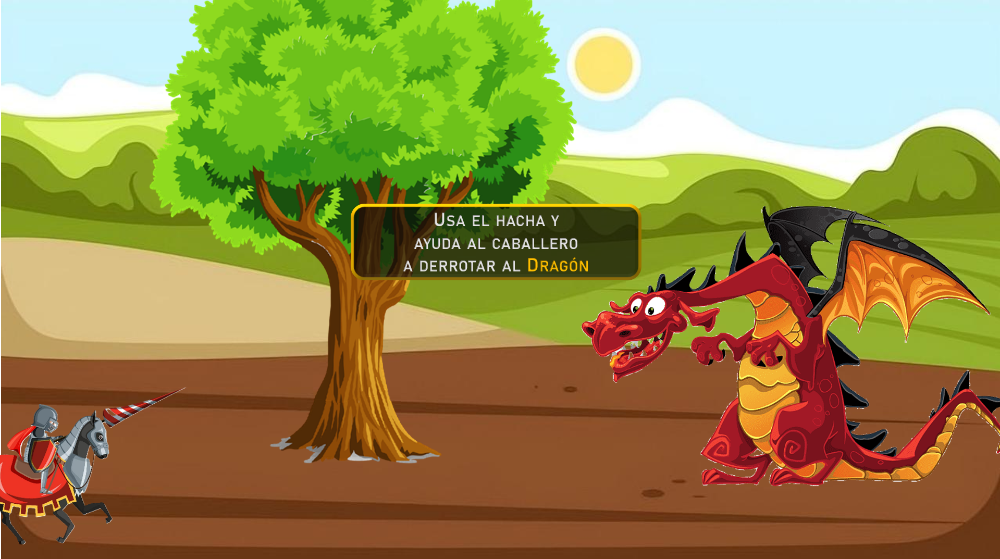
Recopilación de juegos creados con animaciones y funcionalidades de Microsoft PowerPoint.
Ver Proyecto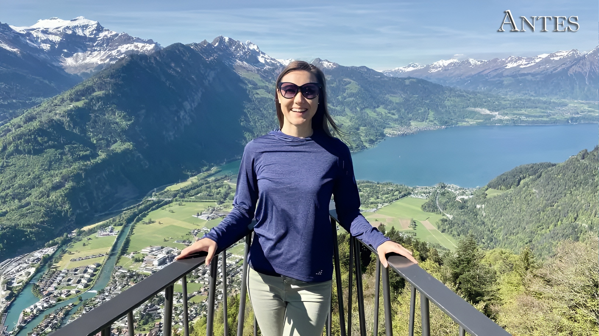
Muestra de algunas imágenes y vídeos creados o editados manualmente y con uso de IA.
Ver Proyecto

Construcción de una caja funcional con temática de caravana usando materiales de reciclaje.
Ver Proyecto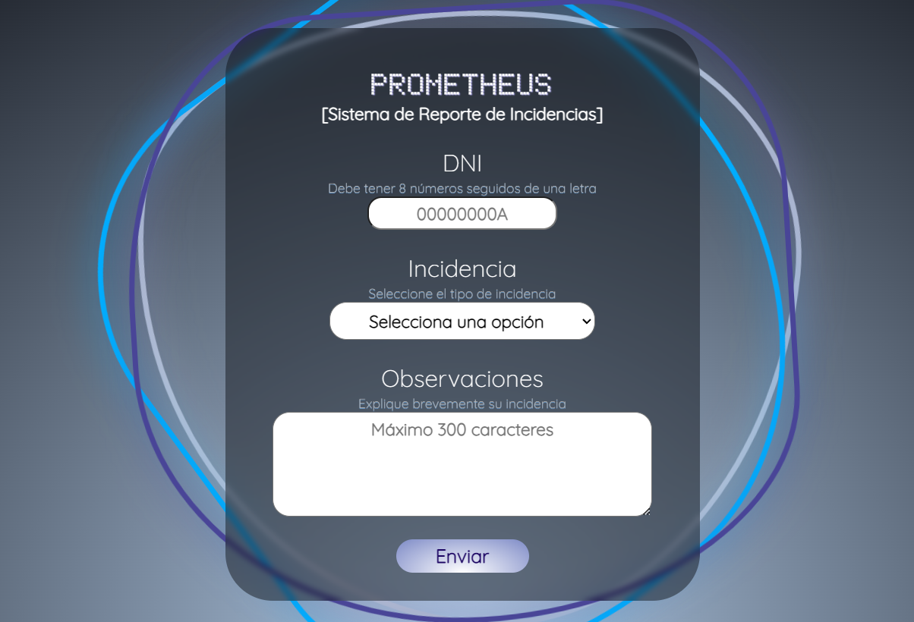
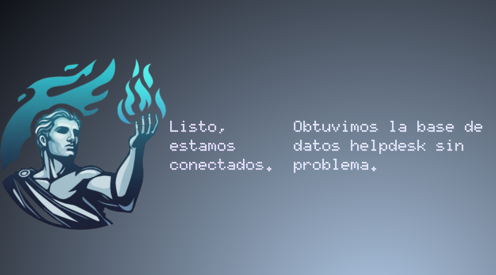
Creación de un sistema para reportar incidencias y gestionarlas mediante una base de datos.
Ver Proyecto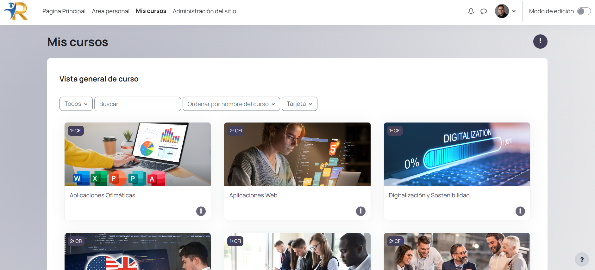
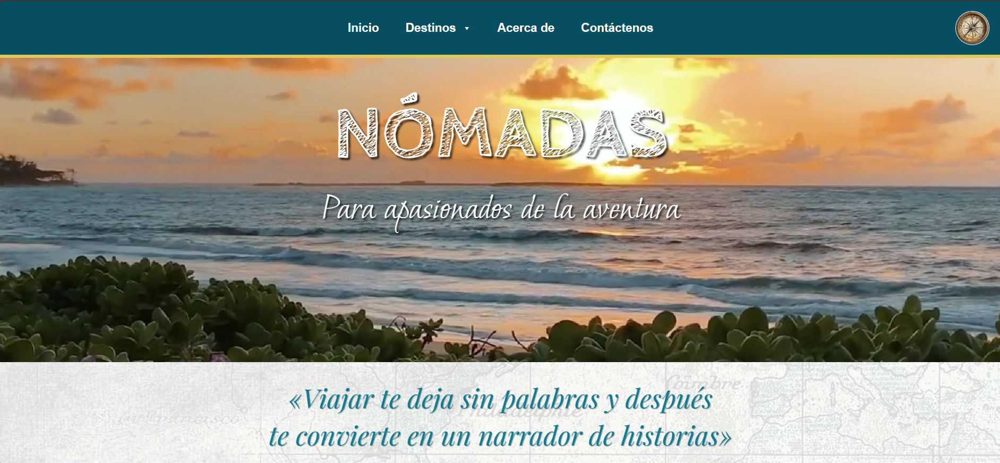
Uso de HTML5 y CCS3 para la creación de páginas web, CMS (Wordpress) y LMS (Moodle).
Ver Proyecto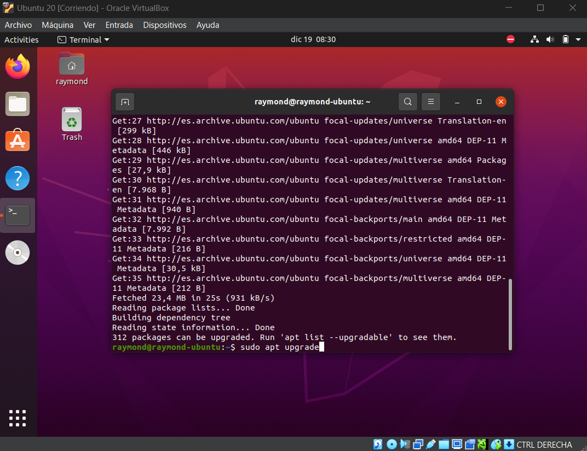
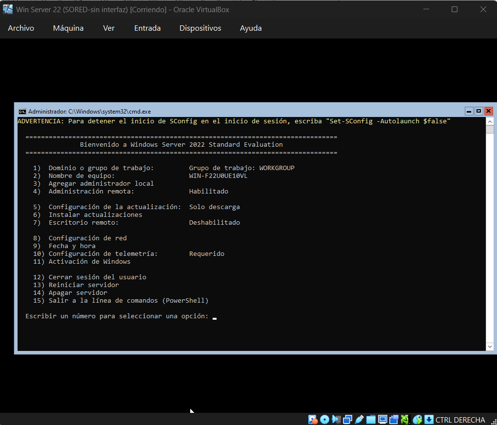
Instalación y configuración de servicios esenciales en sistemas operativos en red
Ver Proyecto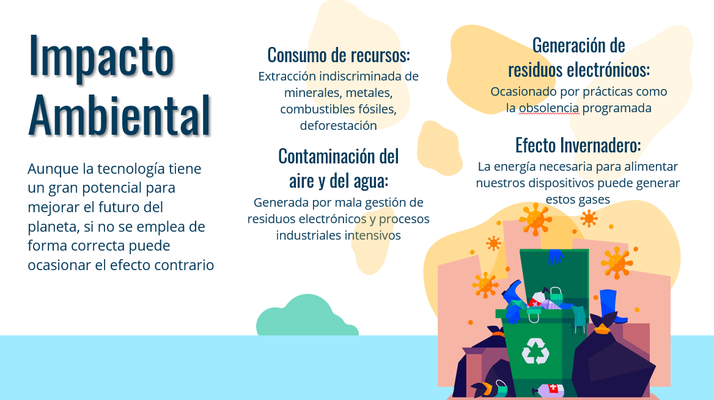
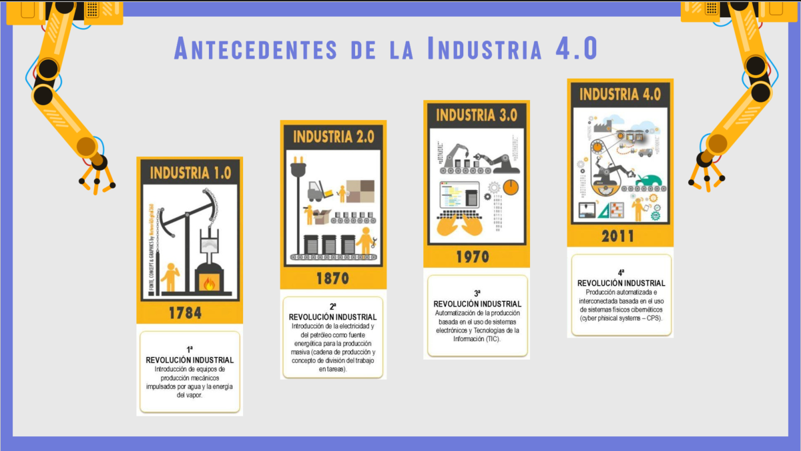
Presentaciones que destacan la importancia de la tecnología en el cuidado del planeta.
Ver ProyectoSi buscas un perfil técnico comprometido, a continuación tienes mis datos.
rjescobarg@gmail.com
Teléfono
+34 644 087 226
Ubicación
Jerez de la Frontera, España
Raymond J. Escobar G.